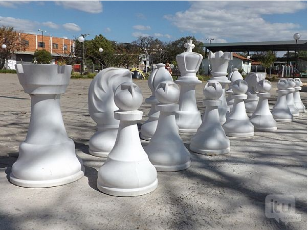
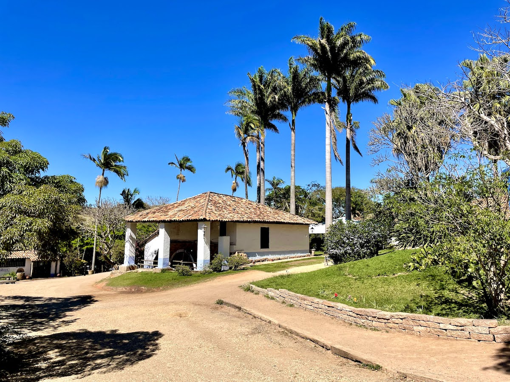
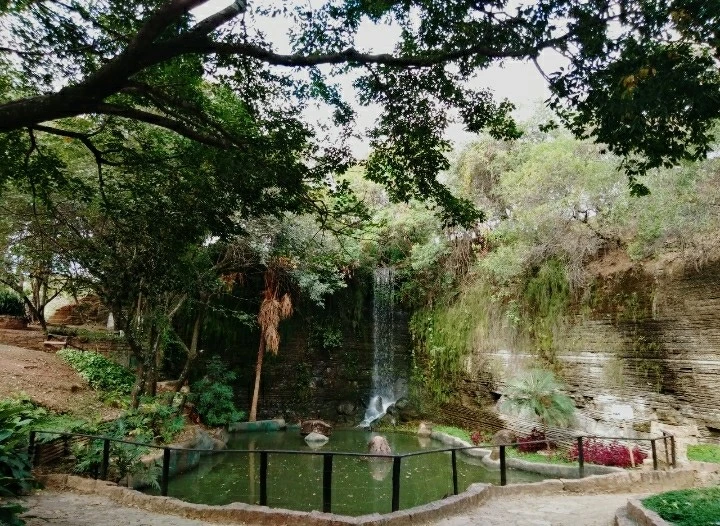

1. Parque com versões gigantes de várias coisas, incluindo tabuleiro de xadrez, lápis, formigas e muito mais.

2. Chocolates artesanais e cafés, além de almoço, em fazenda histórica com trenzinho, cavalos e outros animais.

3. O Parque Geológico do Varvito é uma área exposta de rocha varvito na Bacia do Paraná.

4. Igreja matriz - nossa senhora da candelária é uma importante igreja da época colonial localizada na cidade brasileira de Itu, no Estado de São Paulo.